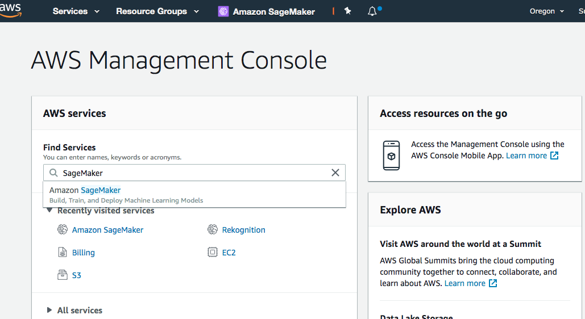
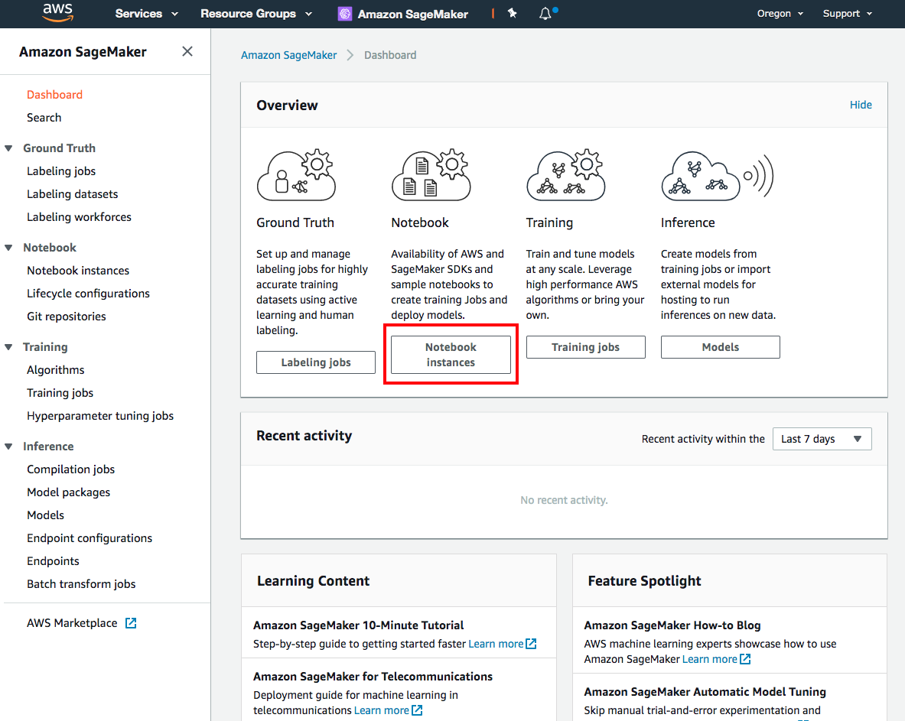
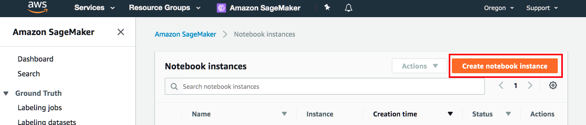

Launch a SageMaker notebook instance
Note: In this workshop, we’ll be using an Amazon SageMaker notebook instance for simplicity and convenience. You can use any local client to perform steps detailed in this and subsequent sections. You’ll just need to make sure you have the right privileges to access AWS services such as SageMaker, S3, ECR and others from your client. You’ll also need to install AWS Command Line Interface (AWS CLI), python, boto3 and SageMaker SDK. The SageMaker Jupyter notebook on the other hand is preconfigured and ready to use.
Launch an Amazon SageMaker notebook instance
Open the AWS Management Console
Note: This workshop has been tested on the US East 1 (N. Virginia) (us-east-1) region. Make sure that you see N. Virginia on the top right hand corner of your AWS Management Console. If you see a different region, click the dropdown menu and select US East (N. Virginia)
In the AWS Console search bar, type SageMaker and select Amazon SageMaker to open the service console. 
Click on Notebook Instances in the Dashboard or on the left-side menu bar 
From the Amazon SageMaker > Notebook instances page, select Create notebook instance. 
In the Notebook instance name text box, enter a name for the notebook instance.
- For this workshop select “adidas202006” as the instance name
- Choose ml.c5.xlarge. We’ll use this instance mostly to launch jobs, with a little of light local early development done on the instance. Training job run on a SageMaker managed server cluster which can be specified on demand.
- Volume size 50 - this is needed for building docker containers and managing file transfers. During training, data is copied from Amazon S3 to the training cluster when using SageMaker, and our volume is used mostly for downloading datasets from the internet and then uploading them to S3.
To create an IAM role, from the IAM role drop-down list, select Create a new role. In the Create an IAM role dialog box, select Any S3 bucket. After that select Select Create role. Amazon SageMaker creates the AmazonSageMaker-ExecutionRole-* ** role.

Keep the default settings for the other options and click Create notebook instance. On the Notebook instances section you should see the status change from Pending -> InService
After the notebook instance spins up, read the next section, and we’ll come back and launch the instance when it’s ready.